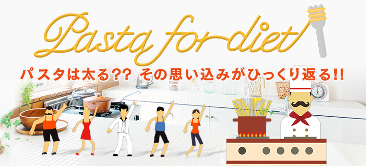

「パスタは高カロリー。だから、太るんでしょう?」そう思ってはいませんか?
あなたの、そんな誤解を、“くるり”とひっくり返す、楽しいショートムービーを用意しました。
これをご覧いただき、ダイエット中のヒトも、そうでないヒトも、
もっとパスタを好きになってくれたら、と思います。
あなたの日々の食卓とダイエットライフを、パスタでもっと豊かにしませんか。
あなたの、そんな誤解を、“くるり”とひっくり返す、楽しいショートムービーを用意しました。
これをご覧いただき、ダイエット中のヒトも、そうでないヒトも、
もっとパスタを好きになってくれたら、と思います。
あなたの日々の食卓とダイエットライフを、パスタでもっと豊かにしませんか。